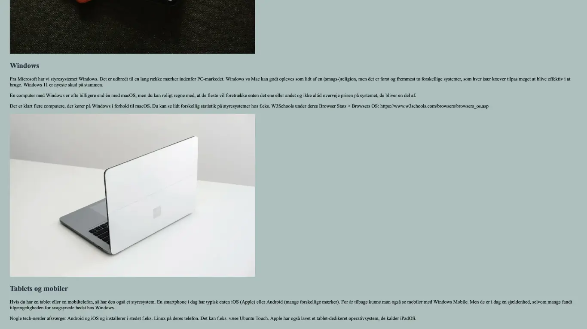
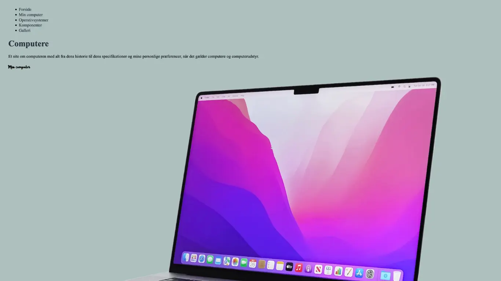

GRUNDLÆGGENDE WEB
I tema 02 blev vi introduceret til de grundlæggende redskaber, som vi skal bruge i uddannelsen.
Vi har gennemført
forskellige øvelser i Figma og VS Code. En af opgaverne inkluderede designet af et visitkort i Figma, og vi har
også
lært at opbygge websider ved brug af HTML og CSS, hvilket endte ud i udviklingen af en hjemmeside
(studiestartsprøven).
Alt dette har vi gjort med fokus på at anvende designkonventioner, gestaltprincipper, wireframes, styletiles
samt fonte
og tekstopsætning. Derudover har vi arbejdet med mappestruktur, CSS grid, flex og media queries.
Resultatet af mit visitkort samt visitkort i Figma
Mit website
Website (studiestartsprøven)
Website


